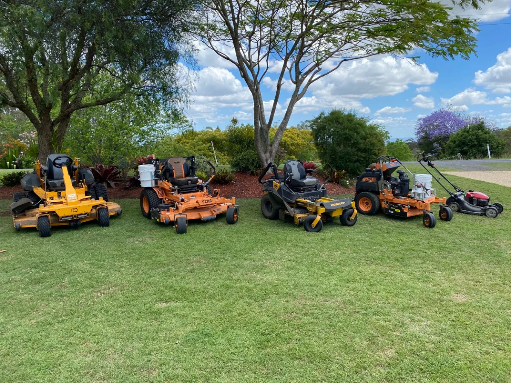
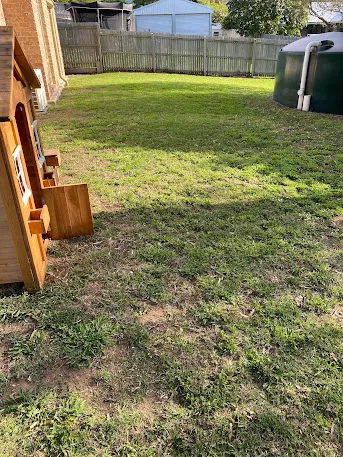
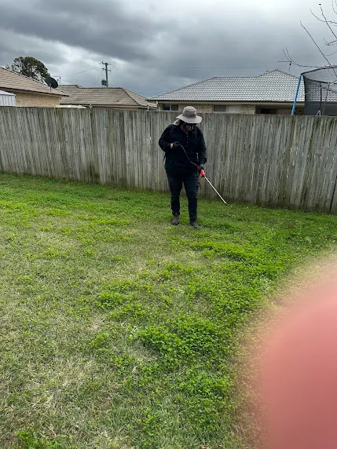
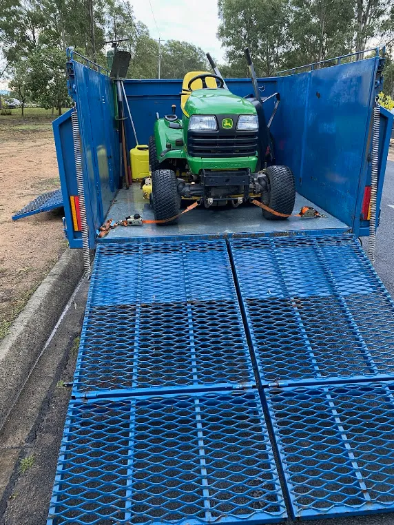
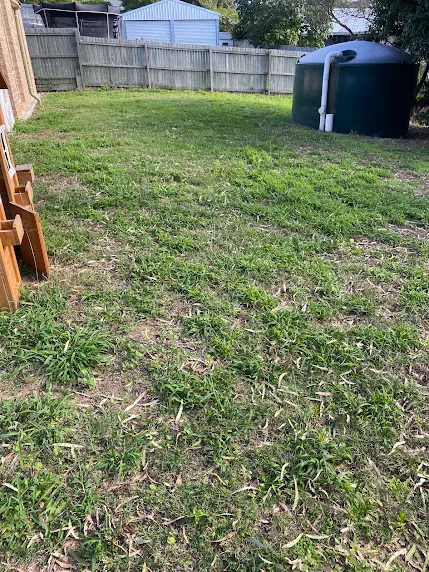
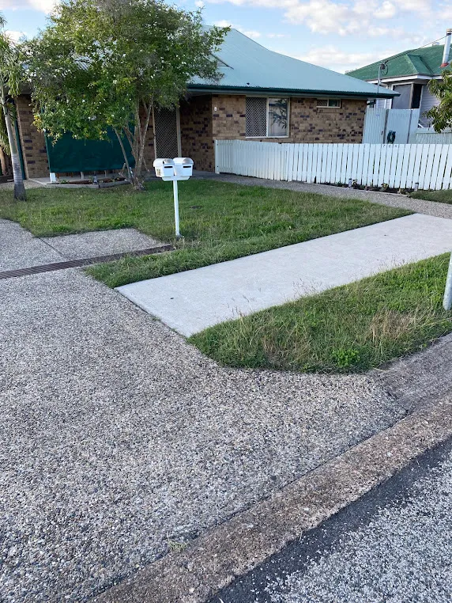

Lawn Mowing Laidley — Reliable, Sharp and On Time
We handle lawn mowing for residential blocks, acreage and commercial properties across the Lockyer Valley all year round. Book a cut once, fortnightly, or on a schedule that suits your grass.
Your Local Grass Cutting Crew, Based in Laidley
Callum's Mowing is a locally owned and operated business working out of Laidley, QLD. We've spent years doing lawn mowing across the Lockyer Valley, and in that time we've learned what this region actually demands: kikuyu that races away after a summer storm, black soil that turns to soup in the wet, and acreage blocks that need a proper machine rather than a push mower and good intentions.
We turn up when we say we will. Blades are kept sharp so your grass is cut cleanly instead of torn, edges are finished properly, and clippings are blown off paths and driveways before we leave. That's the standard on every job, whether it's a 400m² block in town or five acres out past Hatton Vale.
Every property is different, so we quote on what's in front of us — size, slope, access and how long it's been since the last cut. No call-out fees, no lock-in contracts, and a straight answer on price before we start.



What We Do Across the Lockyer Valley
Seven core services, all handled by the same crew, so you're not chasing three different contractors to get your property sorted.
Residential Grass Cutting
Regular or one-off cuts for suburban blocks in Laidley, Plainland and Gatton. Front and back, edged and blown down, in and out without the fuss.
Lawn mowing servicesAcreage Mowing
Purpose-built machines for large rural blocks, paddocks and lifestyle properties. We handle slopes, uneven ground and long growth other operators turn down.
Acreage mowingEdging & Whipper Snipping
Crisp lines along driveways, paths, fence lines and garden beds. This is the detail that makes a lawn look professionally finished rather than just cut.
Edging and whipper snippingGarden Maintenance
Bed tidying, pruning, mulching and general upkeep so your gardens stay under control instead of slowly swallowing the yard.
Garden maintenanceWeed Management & Lawn Weed Control
Targeted treatment for bindii, clover, nutgrass and broadleaf invaders — timed to the season so it actually works.
Lawn weed controlFence Line Work
Fence line spraying to stop growth strangling your boundaries, protecting wire, posts and timber from the damp that rots them.
Fence line sprayingHedging Work
Hedge shaping that keeps screens dense and even, cut so light reaches the base instead of leaving it bare and leggy.
Hedge trimming
Why Locals Book Us Back
- We show up. Scheduled visits happen on the day we agreed, and you get a message if weather forces a change.
- Fully insured. Public liability cover on every job, residential and commercial.
- Rated 5.0 on Google across 25 reviews from Lockyer Valley property owners.
- Right machine for the block. Compact mowers for tight suburban yards, ride-ons built for slopes and acreage lawn mowing.
- Local, not a franchise. You deal with Callum directly — same person quoting, cutting and answering the phone.
Our Recent Work in Laidley and Surrounds
A snapshot of properties we've handled recently across the region. Every one of these started with a phone call and a free quote.





Before and After
Drag the handle across each photo to see the same block before and after a visit. Both of these are customer jobs from the last few months.



What Lockyer Valley Customers Say
Every review below is from a Google review of Callum's Mowing.
Keeley Mc ★★★★★Callum has been helping us keep our yard maintained for over a year now, Callum is kind and always has attention to detail. As 2 parents who work full time it's incredibly hard for us to keep ontop of our yard. Callum helps us enjoy our home and yard without us having to stress. He is trustworthy and always does a 10/10 job.
Scott Commadeur ★★★★★Callum has reliably maintained my acreage lawns in Laidley, as well as my neighbours for some time now. He was able to clear the thick long grass that I was unable to with no troubles at all. He has also helped me with the transport of a ride-on mower to Brisbane, which I am very thankful for. Thanks Callum!
Jody Meagher ★★★★★Highly recommend Callum's Mowing. He is professional, reliable and does an amazing job. Give him a try you won't be disappointed.
Shay Eshman ★★★★★Did an awesome on my yard done a perfect job will use his service again job highly recommend
Where We Work
We provide lawn mowing in Laidley, Plainland, Gatton, Regency Downs, Hatton Vale and Kensington Grove, covering most of the Lockyer Valley between the Warrego Highway and the ranges. Being based in Laidley means short travel times and no travel surcharge for properties inside our regular run. If you're just outside these suburbs, call anyway — if we're already working nearby that week, we can usually fit you in.
Frequently Asked Questions
How much does lawn mowing cost in Laidley?
Price depends on block size, grass length and how much edging is involved, and acreage is quoted per acre. We give you a fixed price before starting, so there are no surprises when the invoice arrives — no call-out fee and no hourly estimate that moves.
How often should I have my grass cut in the Lockyer Valley?
Weekly to fortnightly through the warm months from October to March, when kikuyu and couch grow fastest, then every three to four weeks over winter. Most Lockyer Valley customers run fortnightly year-round and adjust with the seasons. We'll recommend a schedule when we quote your property.
Do you mow acreage and large rural blocks?
Yes. Acreage is a core part of what we do, and we run machines built for large open areas, slopes and rough ground. We regularly handle blocks from one acre up to substantial lifestyle properties around Regency Downs, Hatton Vale and Kensington Grove.
Why should I hire a local mowing contractor instead of doing it myself?
Time, equipment and finish. A large or sloped block can eat an entire weekend and chew through a domestic mower. We arrive with commercial gear, sharp blades and insurance, and we're gone in a fraction of the time with a cleaner result.
What are the signs my lawn needs professional attention?
Patchy yellowing after cuts usually means blunt blades tearing the grass. Weeds spreading through thinning turf, ragged edges along paths, and grass so long the mower bogs down are all signs the job has outgrown a domestic setup and needs commercial equipment.
Do you offer one-off cuts, or only regular schedules?
Both. Plenty of customers book a single tidy-up before an inspection, a sale or family visiting, with no obligation to continue. Others prefer a set fortnightly slot. There's no lock-in contract either way — you can pause or stop whenever you need.
Get Your Free Quote Today
Tell us the suburb and rough block size and we'll price your lawn mowing, usually the same day. Serving Laidley, Gatton, Plainland and the wider Lockyer Valley.